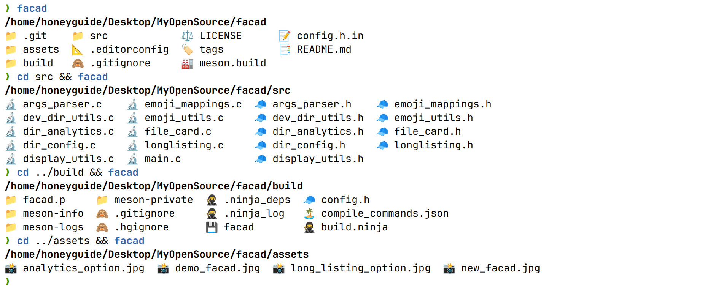

Welcome to Facad’s documentation!
Introduction
Facad is a modern, colorful directory listing tool for the command line.
Features
Intuitive file type representation
Sorted output with directories first
Four-column layout for quick directory analysis
Supports symlinks and executable files
Sort extensions
Unicode-aware formatting
Installation
Dependencies
Pure C implementation without any dependency
Arch Linux
Just use the script from AUR:
yay -S facad
Build from Source
git clone https://github.com/yellow-footed-honeyguide/facad.git
cd facad
mkdir build && cd build
meson setup .. && ninja
Install
For system-wide installation (may require elevated privileges like sudo):
sudo ninja install
Usage
Run facad command for default grid file listing
Run facad -l command for long listing output
Run facad -a command for dir analytics output
Run facad -h command for help
Run facad -v command for version
Modules
Main Program
Main entry point for the facad directory listing tool.
This file contains the main function and core logic for the facad tool, which provides a colorful and feature-rich directory listing in the terminal. It handles command-line arguments, processes directories or files, and displays the results using various output formats.
- Author
Sergey Veneckiy
- Date
2024
Functions
-
static int allocate_entries(FileCardInfo **entries, int *current_size)
Dynamically allocates or reallocates memory for directory entries.
This function manages the memory for the array of FileCardInfo structures. It starts with INITIAL_ENTRIES and doubles the size when more space is needed.
- Parameters:
entries – Pointer to the array of FileCardInfo structures.
current_size – Pointer to the current size of the array.
- Returns:
0 on success, -1 on failure.
-
static int process_directory(const char *dir_path, FileCardInfo **entries, int *num_entries, int *current_size)
Processes directory entries and populates the entries array.
This function reads directory contents, creates FileCardInfo structures for each entry, and dynamically allocates memory as needed. It also integrates Git status information.
- Parameters:
dir_path – Path to the directory to process.
entries – Pointer to the array of FileCardInfo structures.
num_entries – Pointer to the number of entries processed.
current_size – Pointer to the current size of the entries array.
- Returns:
0 on success, -1 on failure.
-
static int process_files_or_patterns(const char **patterns, int pattern_count, FileCardInfo **entries, int *num_entries, int *current_size)
Processes files or patterns and populates the entries array.
This function handles file patterns (including globs) and individual files, creating FileCardInfo structures for matching entries.
- Parameters:
patterns – Array of file patterns or names to process.
pattern_count – Number of patterns in the array.
entries – Pointer to the array of FileCardInfo structures.
num_entries – Pointer to the number of entries processed.
current_size – Pointer to the current size of the entries array.
- Returns:
0 on success, -1 on failure.
-
static int is_directory(const char *path)
Checks if a given path is a directory.
- Parameters:
path – The path to check.
- Returns:
1 if the path is a directory, 0 otherwise.
-
static int process_target(const char *target, FileCardInfo **entries, int *num_entries, int *current_size)
Processes a single target (directory, file, or pattern).
This function handles different types of targets: directories, glob patterns, and individual files. It populates the entries array accordingly.
- Parameters:
target – The target to process (directory path, file path, or pattern).
entries – Pointer to the array of FileCardInfo structures.
num_entries – Pointer to the number of entries processed.
current_size – Pointer to the current size of the entries array.
- Returns:
0 on success, -1 on failure.
-
static int is_glob_or_specific_files(const char **targets, int target_count)
Checks if the targets are glob patterns or specific files.
This function determines whether the given targets include glob patterns or specific files, as opposed to just directories.
- Parameters:
targets – Array of target strings.
target_count – Number of targets in the array.
- Returns:
1 if glob patterns or specific files are present, 0 otherwise.
-
int main(int argc, char *argv[])
Main function of the facad program.
This function serves as the entry point for the facad directory listing tool. It parses command-line arguments, processes directories or files based on the input, and displays the results using the appropriate format (standard, long listing, or analytics).
- Parameters:
argc – Number of command-line arguments.
argv – Array of command-line argument strings.
- Returns:
EXIT_SUCCESS on successful execution, EXIT_FAILURE on error.
Argument Parser
Implementation of command-line argument parsing for facad.
This file contains functions for parsing command-line arguments, identifying options, and handling version and help requests. It also includes utility functions for working with file patterns.
- Author
Sergey Veneckiy
- Date
2024
Functions
-
bool is_glob_pattern(const char *str)
Checks if a string is a glob pattern.
This function determines whether a given string contains wildcard characters used in glob patterns.
- Parameters:
str – The string to check for glob pattern characters.
- Returns:
true if the string contains glob pattern characters, false otherwise.
-
CommandLineArgs parse_args(int argc, char *argv[])
Parses command-line arguments.
This function processes the command-line arguments, setting appropriate flags in the CommandLineArgs structure and collecting non-option arguments as targets.
- Parameters:
argc – The number of command-line arguments.
argv – An array of strings containing the command-line arguments.
- Returns:
A CommandLineArgs structure containing the parsed arguments.
-
void free_args(CommandLineArgs *args)
Frees memory allocated for command-line arguments.
This function releases the memory allocated for the targets array in the CommandLineArgs structure.
- Parameters:
args – Pointer to the CommandLineArgs structure to be freed.
-
void print_version(void)
Prints the version information of facad.
This function displays the version number of the facad program, which is defined in the config.h file.
-
void print_help(const char *program_name)
Prints the help information for facad.
This function displays usage information and available options for the facad program.
- Parameters:
program_name – The name of the program executable.
Directory Utilities
Utility functions for handling the /dev directory.
This file contains functions to identify and process entries in the /dev directory, which contains device files on Unix-like systems.
- Author
Sergey Veneckiy
- Date
2024
Functions
-
int is_dev_directory(const char *path)
Checks if the given path is the /dev directory.
Checks if the specified path is the /dev directory.
- Parameters:
path – The path to check
- Returns:
1 if the path is “/dev”, 0 otherwise
-
int handle_dev_directory(FileCardInfo **entries, int *num_entries, int *current_size)
Processes the contents of the /dev directory.
This function reads the entries in the /dev directory, creates FileCardInfo structures for each entry, and stores them in the provided array.
- Parameters:
entries – Pointer to an array of FileCardInfo pointers
num_entries – Pointer to the number of entries in the array
current_size – Pointer to the current size of the array
- Returns:
0 on success, -1 on failure
Directory Analytics
Implementation of directory analytics functionality.
This file contains functions for analyzing directory contents, including calculation of total size, file counts, depth analysis, and identification of largest and newest files.
- Author
Sergey Veneckiy
- Date
2024
Functions
-
static char *format_size(off_t size)
Formats a file size into a human-readable string.
- Parameters:
size – The size in bytes to format.
- Returns:
A pointer to a static buffer containing the formatted size string.
-
static char *format_time(time_t t)
Formats a time_t value into a human-readable string.
- Parameters:
t – The time_t value to format.
- Returns:
A pointer to a static buffer containing the formatted time string.
-
static void recursive_dir_scan(const char *path, int *max_depth, int current_depth, char *deepest_dir)
Recursively scans a directory to find its maximum depth.
- Parameters:
path – The path of the directory to scan.
max_depth – Pointer to the current maximum depth.
current_depth – The current depth in the recursion.
deepest_dir – Buffer to store the path of the deepest directory.
-
static off_t calculate_total_size(const char *path)
Calculates the total size of a directory and its contents.
- Parameters:
path – The path of the directory to analyze.
- Returns:
The total size of the directory in bytes.
-
static void find_largest_file(const char *path, off_t *largest_size, char *largest_file, size_t largest_file_size)
Recursively finds the largest file in a directory and its subdirectories.
- Parameters:
path – The path of the directory to scan.
largest_size – Pointer to store the size of the largest file found.
largest_file – Buffer to store the path of the largest file.
largest_file_size – Size of the largest_file buffer.
-
void print_dir_analytics(const char *path)
Prints detailed analytics about a directory.
This function analyzes the contents of the specified directory and prints various statistics including total size, file counts, directory depth, and information about largest and newest files.
- Parameters:
path – The path of the directory to analyze.
Directory Configuration
Implementation of directory configuration functions.
This file contains the implementation of functions related to directory-specific configurations, particularly for setting the maximum number of columns for directory listings.
- Author
Sergey Veneckiy
- Date
2024
Functions
-
int get_max_columns(const char *path)
Get the maximum number of columns for a given directory path.
This function checks if the given path matches any of the specially configured directories and returns the corresponding maximum number of columns. If no match is found, it returns the default value.
- Parameters:
path – The directory path to check.
- Returns:
The maximum number of columns for the directory listing.
Variables
-
const DirectoryConfig directory_configs[] = {{"/dev", 6}, {"/proc", 5},}
Array of directory configurations.
This array defines special configurations for specific directories, setting a custom maximum number of columns for their listings.
-
const int num_directory_configs = sizeof(directory_configs) / sizeof(directory_configs[0])
Number of entries in the directory_configs array.
This extern declaration makes the count of directory configurations available to other source files that include this header.
Display Utilities
Implementation of display utilities for file entries.
This file contains functions for formatting and displaying file entries in a grid layout, taking into account terminal width and Unicode characters. It handles the visual representation of directory contents, including emojis, Git status, and proper spacing.
- Author
Sergey Veneckiy
- Date
2024
Functions
-
size_t get_utf8_char_width(const char *str)
Determines the byte width of a UTF-8 character.
This function analyzes the first byte of a UTF-8 character to determine its total byte width.
- Parameters:
str – Pointer to the start of a UTF-8 character.
- Returns:
The number of bytes used by the character (1-4).
-
size_t get_display_width(const char *str)
Calculates the display width of a string, accounting for multi-byte characters.
This function iterates through the string, determining the width of each character and summing them to get the total display width.
- Parameters:
str – The string to measure.
- Returns:
The display width of the string.
-
void print_padded(const char *str, size_t width)
Prints a string and pads it with spaces to reach the specified width.
This function prints the given string and adds space padding to ensure consistent column widths in the display.
- Parameters:
str – The string to print.
width – The total width to fill, including the string and padding.
-
void display_entries(FileCardInfo *entries, int num_entries, int term_width, const char *current_dir, int show_path)
Displays file entries in a formatted, multi-column layout.
This function sorts the entries, calculates the appropriate layout based on terminal width, and prints the entries in a grid format. It handles emojis, Git status, and ensures proper alignment.
- Parameters:
entries – Array of FileCardInfo structures to display.
num_entries – Number of entries in the array.
term_width – Width of the terminal in characters.
current_dir – Current directory path.
show_path – Flag to indicate whether to show the current path.
Emoji Mappings
Variables
-
const EmojiMapEntry emoji_extension_map[]
Emoji mappings for file extensions.
Array of emoji mappings for file extensions.
This array maps file extensions to corresponding emojis. It is used to assign emojis based on the file type indicated by its extension.
-
const size_t emoji_extension_map_size = sizeof(emoji_extension_map) / sizeof(emoji_extension_map[0])
Size of the emoji_extension_map array.
-
const EmojiMapEntry emoji_exact_file_map[]
Emoji mappings for exact file names.
Array of emoji mappings for exact file names.
This array maps specific file names to corresponding emojis. It is used to assign emojis based on exact matches of file names, typically for special files.
-
const size_t emoji_exact_file_map_size = sizeof(emoji_exact_file_map) / sizeof(emoji_exact_file_map[0])
Size of the emoji_exact_file_map array.
-
const EmojiMapEntry emoji_file_content_map[]
Emoji mappings for file content patterns.
Array of emoji mappings for file content patterns.
This array maps file content patterns (typically shebang lines) to corresponding emojis. It is used to assign emojis based on the content of script files.
-
const size_t emoji_file_content_map_size = sizeof(emoji_file_content_map) / sizeof(emoji_file_content_map[0])
Size of the emoji_file_content_map array.
-
const EmojiMapEntry emoji_exact_dev_file_map[]
Emoji mappings for exact device file names in /dev.
Array of emoji mappings for exact device file names in /dev.
This array maps specific device file names in the /dev directory to corresponding emojis. It is used to assign emojis to known device files.
-
const size_t emoji_exact_dev_file_map_size = sizeof(emoji_exact_dev_file_map) / sizeof(emoji_exact_dev_file_map[0])
Size of the emoji_exact_dev_file_map array.
-
const EmojiMapEntry emoji_prefix_dev_map[] = {{"loop", "🔁"}, {"sd", "💽"}, {"tty", "🖥️"}, {"usb", "🔌"}, {"video", "🎥"}, {"nvme", "💽"}, {"lp", "🖨️"}, {"hidraw", "🔠"}, {"vcs", "📟"}, {"vcsa", "📟"}, {"ptp", "🕰️"}, {"rtc", "🕰️"}, {"watchdog", "🐕"}, {"mtd", "⚡"}}
Emoji mappings for device file name prefixes in /dev.
Array of emoji mappings for device file name prefixes in /dev.
This array maps prefixes of device file names in the /dev directory to corresponding emojis. It is used to assign emojis to device files based on their name prefixes.
-
const size_t emoji_prefix_dev_map_size = sizeof(emoji_prefix_dev_map) / sizeof(emoji_prefix_dev_map[0])
Size of the emoji_prefix_dev_map array.
Emoji Utilities
Implementation of emoji utility functions for file representation.
This file contains functions for determining appropriate emojis for files based on their types, attributes, and locations. It supports both regular files and special files in the /dev directory.
- Author
Sergey Veneckiy
- Date
2024
Defines
-
MAX_PATH
Functions
-
static char *safe_strdup(const char *str)
Safely duplicates a string, handling memory allocation errors.
- Parameters:
str – The string to duplicate
- Returns:
A newly allocated copy of the input string
-
char *get_dev_emoji(const char *path)
Determines the appropriate emoji for files in the /dev directory.
Determines the appropriate emoji for a device file in the /dev directory.
- Parameters:
path – The name of the file in the /dev directory
- Returns:
A dynamically allocated string containing the emoji
-
static char *check_file_content(const char *path)
Checks the file content for specific patterns to determine the file type.
- Parameters:
path – The path to the file
- Returns:
A dynamically allocated string containing the emoji, or NULL if no match
-
char *get_emoji(const char *path)
Determines the appropriate emoji for a given file based on its characteristics.
Determines the appropriate emoji for a given file path.
- Parameters:
path – The path to the file
- Returns:
A dynamically allocated string containing the emoji
-
int is_executable(const char *path)
Checks if a file is executable.
- Parameters:
path – The path to the file
- Returns:
1 if the file is executable, 0 otherwise
-
int is_text_file(const char *path)
Checks if a file is a text file by examining its contents.
Checks if a file is a text file.
- Parameters:
path – The path to the file
- Returns:
1 if the file is likely a text file, 0 otherwise
File Card
Implementation of file card handling functions.
This file contains functions for creating, freeing, and comparing file entries, as well as utility functions for working with file names and extensions. It provides the core functionality for managing file information in the facad tool.
- Author
Sergey Veneckiy
- Date
2024
Functions
-
int create_file_entry(FileCardInfo *entry, const char *path)
Creates a new file card based on the given path.
Creates a file entry based on the given path.
This function initializes a FileCardInfo structure with information about the file, including its name, emoji representation, and flags for directory and hidden status.
- Parameters:
entry – Pointer to a FileCardInfo structure to be filled.
path – Path of the file to analyze.
- Returns:
0 on success, -1 on error.
-
void free_file_entry(FileCardInfo *entry)
Frees memory allocated for a file entry.
Frees the memory allocated for a file entry.
This function releases the memory allocated for the name and emoji fields of a FileCardInfo structure.
- Parameters:
entry – Pointer to the FileCardInfo structure to free.
-
char *get_extension(const char *name)
Extracts the file extension from a filename.
This function finds the last occurrence of a dot in the filename and returns the substring following it as the file extension.
- Parameters:
name – The filename to analyze.
- Returns:
A pointer to the file extension, or an empty string if no extension is found.
-
static int strcasecmp_wrapper(const char *a, const char *b)
Compare two strings case-insensitively.
This function provides a case-insensitive string comparison, similar to strcasecmp, but implemented for portability.
- Parameters:
a – The first string to compare.
b – The second string to compare.
- Returns:
An integer less than, equal to, or greater than zero if a is found, respectively, to be less than, to match, or be greater than b.
-
int compare_file_entries(const void *a, const void *b)
Compare two file entries for sorting.
Compares two file entries for sorting purposes.
This function implements the sorting logic for file entries:
Directories before files
Within directories and files, dotfiles (hidden) before non-dotfiles
Files sorted by extension
Alphabetical sorting within the same type and extension
- Parameters:
a – Pointer to the first FileCardInfo structure.
b – Pointer to the second FileCardInfo structure.
- Returns:
An integer less than, equal to, or greater than zero if a is found, respectively, to be less than, to match, or be greater than b.
Git Integration
Implementation of Git integration for file entries.
This file contains functions for integrating Git status information into the file entries displayed by the facad tool. It provides functionality to retrieve and apply Git status to FileCardInfo structures.
- Author
Sergey Veneckiy
- Date
2024
Functions
-
void integrate_git_status(FileCardInfo **entries, int *num_entries, const char *current_dir)
Integrates Git status information into file entries.
This function retrieves the Git status for files in the current directory and updates the corresponding FileCardInfo structures with this information.
- Parameters:
entries – Pointer to an array of FileCardInfo pointers.
num_entries – Pointer to the number of entries in the array.
current_dir – The current directory path.
Git Utilities
Implementation of Git utility functions for facad.
This file contains utility functions for interacting with Git repositories. It provides functionality to check if the current directory is a Git repository, retrieve Git status information, and get the current branch name.
- Author
Sergey Veneckiy
- Date
2024
Functions
-
bool is_git_repository()
Checks if the current directory is part of a Git repository.
This function executes the ‘git rev-parse’ command to determine if the current working directory is within a Git repository.
- Returns:
true if the current directory is in a Git repository, false otherwise.
-
static char parse_status(const char *status_str)
Parses a Git status string and returns a single character status code.
This function interprets the two-character Git status string and returns a single character representing the file’s status.
- Parameters:
status_str – Two-character Git status string.
- Returns:
Single character representing the file’s Git status.
-
GitFileList get_git_status()
Retrieves the Git status for all files in the current repository.
This function executes ‘git status’ command and parses its output to create a list of files with their corresponding Git status.
- Returns:
GitFileList structure containing the status of all files in the repository.
-
char *get_current_branch()
Retrieves the name of the current Git branch.
This function executes ‘git rev-parse’ command to get the name of the current Git branch.
Note
The caller is responsible for freeing the returned string.
- Returns:
Dynamically allocated string containing the branch name, or NULL if an error occurred.
Long Listing
Implementation of detailed directory listing functionality.
This file contains functions for generating and displaying a detailed listing of directory contents, including file sizes, permissions, modification times, and other attributes.
- Author
Sergey Veneckiy
- Date
2024
Functions
-
static char *format_size(off_t size)
Formats a file size into a human-readable string.
- Parameters:
size – The size in bytes to format.
- Returns:
A pointer to a static buffer containing the formatted size string.
-
static void format_time_ago(time_t file_time, char *buf, size_t buf_size)
Formats the time difference between now and a given time into a human-readable string.
- Parameters:
file_time – The time to format.
buf – Buffer to store the formatted string.
buf_size – Size of the buffer.
-
static void get_user_rights(mode_t mode, char *rights)
Converts file permissions to a string of emojis representing user rights.
- Parameters:
mode – The file mode containing the permissions.
rights – Buffer to store the emoji string.
-
static off_t get_dir_size(const char *path)
Calculates the total size of a directory and its contents.
- Parameters:
path – The path of the directory.
- Returns:
The total size of the directory in bytes.
-
static int count_subdirs(const char *path)
Counts the number of subdirectories in a given directory.
- Parameters:
path – The path of the directory.
- Returns:
The number of subdirectories.
-
static int compare_entries(const void *a, const void *b)
Comparison function for sorting file_info structures.
-
static int get_file_info(const char *path, struct file_info *fi, size_t *max_owner_len, size_t *max_time_ago_len)
Gets detailed information about a file.
- Parameters:
path – The path to the file.
fi – Pointer to a file_info structure to populate.
max_owner_len – Pointer to store the maximum owner name length.
max_time_ago_len – Pointer to store the maximum time ago string length.
- Returns:
0 on success, -1 on failure.
-
static void print_sorted_entries(struct file_info *entries, int entry_count, size_t max_owner_len, size_t max_time_ago_len)
Prints sorted entries in a detailed format.
- Parameters:
entries – Array of file_info structures.
entry_count – Number of entries in the array.
max_owner_len – Maximum length of owner names.
max_time_ago_len – Maximum length of time ago strings.
-
void print_longlisting(const char *path)
Prints a detailed listing of the contents of a directory.
- Parameters:
path – The path of the directory to list.
-
void print_longlisting_files(const char **patterns, int pattern_count)
-
struct file_info
Structure to hold detailed information about a file or directory.
Public Members
-
char name[256]
Name of the file or directory
-
char full_path[MAX_PATH]
Full path to the file or directory
-
off_t size
Size of the file or directory
-
mode_t mode
File mode (permissions)
-
time_t mtime
Last modification time
-
int is_dir
Flag indicating if it’s a directory
-
int subdir_count
Number of subdirectories (for directories)
-
char owner[256]
Owner of the file or directory
-
char user_rights[16]
User rights represented as emojis
-
char time_ago[MAX_TIME_AGO_LEN]
Human-readable time since last modification
-
char name[256]
Contributing
Contributions are welcome! Please feel free to submit a Pull Request.
Fork the Project
Create your Feature Branch (git checkout -b feature/AmazingFeature)
Commit your Changes (git commit -m ‘Add some AmazingFeature’)
Push to the Branch (git push origin feature/AmazingFeature)
Open a Pull Request
License
Distributed under the MIT License. See LICENSE for more information.